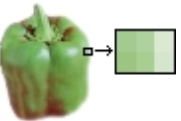
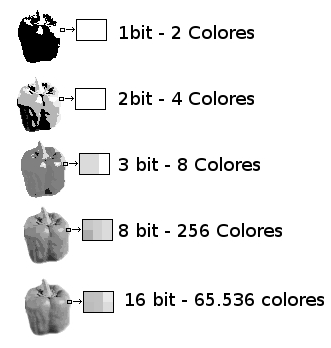
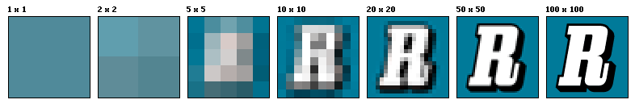

Imagen digital#
¿Qué es la imagen digital?#
Las imágenes digitales se obtienen a través de dispositivos de conversión analógico-digital como un escáner, una cámara fotográfica digital o directamente desde el ordenador utilizando cualquier programa de tratamiento de imágenes.
El píxel#
Las imágenes digitales se crean formando una retícula rectangular formada por celdillas. Cada una de las celdillas recibe el nombre de píxel. Este nombre proviene de la expresión que se obtiene al unir las palabras inglesas picture y element. Los píxeles son las unidades de color que componen la imagen. Un píxel no tiene una medida concreta, no se puede decir si mide 1 mm. o 1 cm. o 1 m., simplemente es la medida de división de una retícula en celdillas.
Profundidad de píxel#
El número de bits por píxel determinará la gama de colores de una imagen, por ejemplo:
Color real#
Cada píxel solamente puede ser de un color, cuando decimos que una imagen es de 256 colores, queremos decir que cada píxel puede tomar uno de esos 256 colores.Si la profundidad es de 24 bits, tenemos la posibilidad de manejar millones de colores con la combinación de los tres primarios:
rojo (red), verde (green) y azul (blue), es el llamado modo RGB.
Cada canal de color tiene 8 bits para controlar cada color (8+8+8 = 24) , por lo tanto, los colores que podemos obtener son
2 8 x 2 8 x 2 8 = 256 x 256 x 256 = 16.777.216
por eso se llama «millones de colores» y se conoce como color real. Con esta cantidad de colores es suficiente para que el ojo humano perciba las imágenes con calidad fotográfica.
Modos de color#
Llamamos modo de color al sistema de coordenadas que nos sirve para describir los colores de forma numérica. Los principales son:
RGB (rojo, verde y azul)
HLS (tono, luminosidad, saturación)
CMYK (cian, magenta, amarillo y negro).
Resolución de una imagen#
La calidad de una imagen está directamente relacionada con la resolución que tiene: a mayor resolución mayor calidad de imagen. Si una imagen tiene una resolución de 200 ppp, en cada pulgada cuadrada nos encontramos la cantidad de 200 x 200 píxeles, lo que nos da un resultado de 40.000 píxeles que contienen la información digital de esa imagen. Si esa misma imagen tiene una resolución de 72 ppp, la información digital está contenida en 5.184 píxeles, con lo que la calidad de la imagen será menor: menor resolución, menor información y menor detalle.
Formatos de imagen digital#
Las imágenes que pueden ser tratadas en el ordenador básicamente se clasifican en dos tipos: imágenes bitmap (mapa de bits) e imágenes vectoriales.
Bitmap#
La imagen está formada por una matriz de píxeles. Cuando modificamos una imagen bitmap lo que estamos haciendo es cambiar el aspecto de los píxeles con programas de tratamiento de imagen como GIMP.
Los principales formatos de mapas de bits o bitmap son los siguientes:
BMP: Formato de calidad. Los archivos tienen gran peso. Extensión: *.bmp
TIFF: Se utiliza para imágenes de alta calidad que van a ser impresas. Extensión: *.tif
XCF: Formato nativo de GIMP. Permite almacenar las imágenes con capas y modificarlas posteriormente. Extensión: *.xcf
PICT: Es el formato característico de la plataforma MAC. Permite ser comprimido sin perder calidad de imagen. Extensión: *.pic
JPG: Es el formato más utilizado en las páginas de Internet para la reproducción de fotografías. Permite comprimir las imágenes pero produce pérdidas de calidad. Extensión: *.jpg
GIF: Este formato también se utiliza en las páginas web de Internet, pudiendo comprimir las imágenes sin pérdidas. Utiliza el modo de color indexado para las imágenes que no tienen muchas tonalidades de color. Permite gráficos animados y transparencia. Extensión: *.gif
PNG: Tiene las ventajas de los formatos GIF y JPG. Comienza a ser muy utilizado en Internet por su gran capacidad de compresión sin pérdida y por tener la posibilidad de manejar transparencia. Extensión: *.png
PSD: Formato nativo de Photoshop que permite guardar todas las presentaciones, retoques y nuevas creaciones realizadas con este programa. Extensión: *.psd
Vectorial#
Se representan con trazos geométricos que están controlados por operaciones matemáticas que realiza el ordenador. Las líneas que componen la imagen están definidas por vectores (de ahí su nombre). La ventaja de este tipo de imagen es que pueden reducirse o ampliarse sin ningún tipo de pérdida de calidad. LibreOffice Draw es un editor de gráficos vectoriales. Los principales formatos de las imágenes vectoriales son los siguientes:
SVG: Vectores gráficos escalables. Formato muy reciente pero que puede ser usado fácilmente en GIMP. Extensión: *.svg
WMF: Formato de archivo vectorial de la plataforma Windows. Es el formato que mejor se adapta a los distintos programas de dibujo. Extensión: *.wmf
SWF: Imágenes vectoriales para animación web. Extensión: *.swf
EPS: Formato utilizado habitualmente para exportar imágenes de mapa de bits con trazados vectoriales. Extensión: *.eps
PDF: Es compatible entre las plataformas MAC, Linux y PC. Usado fundamentalmente para la confección de documentos que puedan descargarse de Internet. Extensión: *.pdf